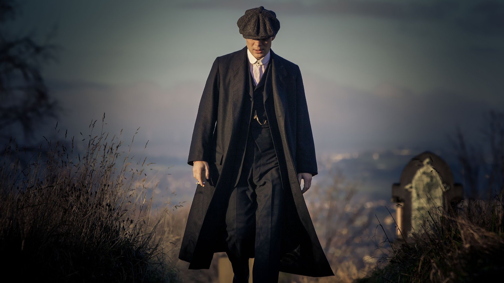

Os Peaky Blinders são uma organização criminosa de origem cigana que se passa na cidade de Birmingham, Inglaterra, em 1919, formada vários meses após o final da Primeira Guerra Mundial (1914–1918). A história é centrada na ambição do líder da gangue inglesa, Thomas "Tommy" Shelby (Cillian Murphy).